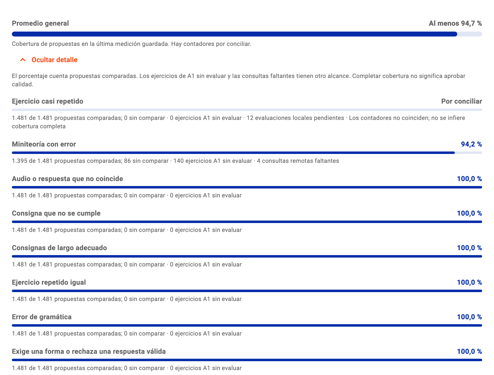

059Interfaz implementadaCentro de control · Análisis · 9 octubre 2026
Promedio general y detalle de lo que falta
Una barra común y el desglose por analizador, sin confundir consultas gastadas con cobertura.
El cambio está implementado y probado. Muestra la cobertura guardada, con pendientes por analizador; falta recompilar la interfaz para verlo en la app abierta.
El detalle abre debajo del promedio

Componente real en prueba local; datos guardados del cierre de las 07:19 ART.
Cada analizador pesa lo mismo. Los contadores contradictorios muestran “por conciliar”; el promedio indica un mínimo, no una cobertura completa inventada.
Miniteoría avanzó, pero el nuevo cierre sigue parcial
Dato
Cierre anterior
Cierre nuevo
Propuestas vigentes
1.489
1.481
Propuestas sin comparar · Miniteoría
755
86
Ejercicios A1 sin evaluar · Miniteoría
1.159
140
Consultas de Miniteoría faltantes
36
4
Evaluaciones locales por conciliar · duplicados
12
12
La continuación iniciada desde la UI consumió 36 de 36 consultas. El control devolvió ocho propuestas; la calidad sigue sin pasar.
No se inició otra pasada. Las cuatro consultas faltantes no están autorizadas; completarlas tampoco garantiza aprobar calidad.
La app abierta queda intacta
1ImplementadoBarra general y detalle desplegable; nombres y unidades claros.
2Probado40 pruebas focalizadas y una lectura real; análisis estático limpio.
3Activación pendienteRecompilar la interfaz sin recompilar Java ni reiniciar automáticamente.
La guía de diseño conservó los colores y componentes existentes. Cobertura, presupuesto y calidad tienen lecturas separadas; no se tocó producción.